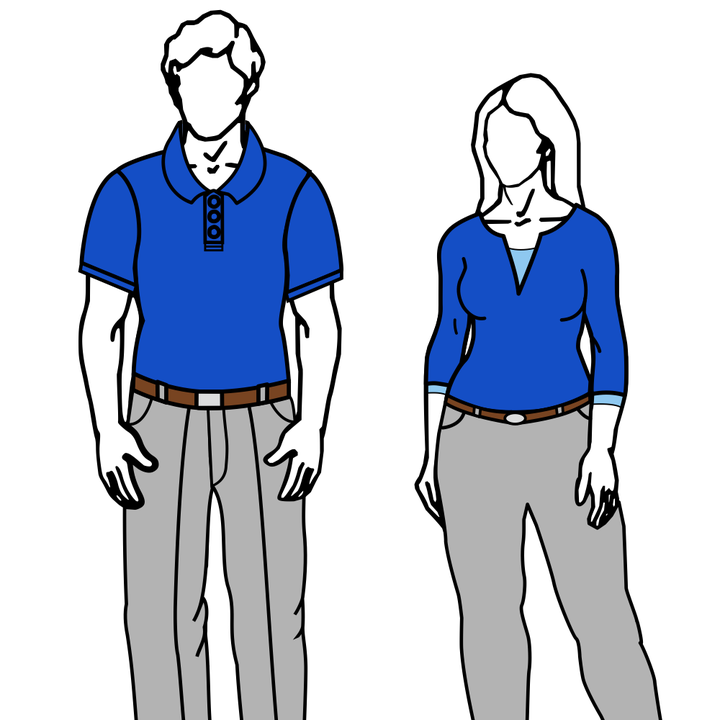

Initial Client Meeting Guide
PST 315: Methods of Policy Analysis and Presentation
After sending your client an email and setting up a meeting time, you need to send a Zoom link at the time you have set up. If you have questions on how to set up a Zoom meeting and share it with your client, please ask your UCA.
Before your client meeting, it is important you prepare and come ready with a plan to make the meeting efficient. Your client is likely very busy and you don’t want to waste any time. You should prepare by reading the project description you were given by your UCA and brainstorming questions to ask your client. You should also look over the Contract and Timeline document and brainstorm your thoughts on how to fill it out. These thoughts can be shared with your client to start the conversation but ultimately should be filled in with your client’s preferences.
In your meeting, you have a few things you should cover.
Introduce yourself and get to know your client
- Tip: Take a few minutes to ask your client about themselves, their background, and their organization. Using Dale Carnegie principles and genuinely being interested in learning about your client and their organization will help you better understand them and can help with creating a positive working relationship.
- Tip: Research your client’s organization beforehand to demonstrate your interest in their organization and this project.
Ask your client to explain the project in more detail and ask any clarifying questions you have based on the details you were given
- Tip: Take notes on this! It will be helpful to refer back to when you are starting your project and will ensure you don’t ask questions they have already answered.
- Tip: Do not be afraid to ask questions throughout this process. It is better to ask a question to your client than make a mistake or have a misunderstanding with what your client expects.
- Tip: Work with your client in this meeting to determine what the intended target population, sampling frame, and response rate is for your survey. This will help clear up expectations from the beginning!
Work through the Contract and Timeline with your client
- Tip: See the Contract and Timeline Guide for specifics on what to discuss with your client and how to properly fill it out.
Discuss the best way to communicate with your client and set up a follow-up meeting for the next week
Thank them for their time!
Zoom etiquette
Some of you will have your meeting over Zoom and others in person. For those who have your meeting on Zoom, here are some reminders about etiquette:
- Be sure to be in a quiet environment with a minimally distracting background.
- Keep in mind that while your client sees you, they are also seeing whatever is behind you, so be sure your background is minimal and appropriate.
- If you cannot ensure a minimal/appropriate background, it is all right to use a virtual background.
- To optimize your professional appearance, make sure you are well lit and not using low angles.
- Be on the call at least 5 minutes early.
- Most importantly – be attentive and responsive.
Regardless of the setting of your meeting, you should be in business casual dress. Business casual generally means a collared shirt, blouse, or sweater with slacks, chinos, or a skirt, and closed shoes – no t-shirts, athletic wear, ripped jeans, or flip-flops.

{kind=link}
If you have any questions about business casual dress, please do not hesitate to reach out to your UCA.